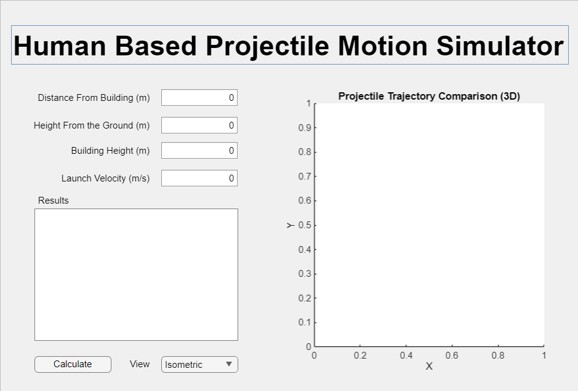
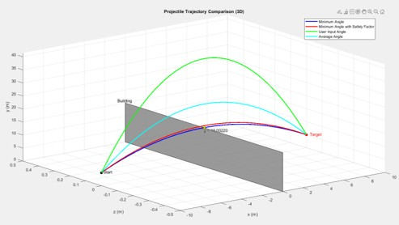

Projectile Motion
Trajectory Analyser
Engineering Computing and Analysis · University of Wollongong Dubai
The Challenge
Develop a computational application that solves the projectile motion problem for basketball trajectories, but parameterised to a specific real-world constraint: the ball should be able to be thrown by a human and must pass over a building at a specified height. Given a user-defined launch position and building geometry it computes all valid trajectory solutions and visualises them in three dimensions.
Technical Implementation
The application was built using MATLAB App Designer, which provides a GUI framework for building interactive desktop apps within MATLAB. The core computation solves the projectile equations of motion to find the minimum launch angle and corresponding velocity that satisfies the geometric constraints. Alternate trajecories are provided for cases including the application of a safety-factor, the optimal trajectory for an average human and the maximum velocity and angle for the ball to reach the goal.
Key features implemented:
- User-defined input parameters: launch position, target window coordinates, building dimensions
- Numerical solver for minimum launch angle across the valid solution space
- Real-time collision detection against building geometry. Flags trajectories that intersect the structure before reaching the target
- Interactive 3D trajectory plot distinguishing valid throws (clear path) from invalid throws (structural collision)
- Dynamic parameter updates: changing any input value regenerates the plot in real time


Outcomes
The application successfully computed and visualised minimum-angle trajectories with full 3D collision detection. The solver handles edge cases including grazing trajectories and windows positioned at or near the apex of the parabolic path.